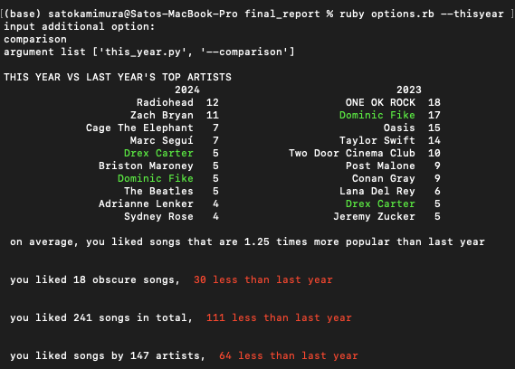

Final Project Files
Table of Contents
氏名: 上村 知
研究室: 巳波研究室 (M1)
学籍番号: 47024711
1. Final Project Premise
- A ruby program that takes in options in order to run different variations of python programs.
- A 'likes' version of Spotify wrapped, showing annual analyses, comparisons, as well as information based on the users' entire history as a Spotify user.
- Showcases what we learned in class regarding usage of ruby, usefulness of options, and how to implement those features in our programs.
2. Files Included
- options.rb
- Contains ruby program that accepts options that are accepted when running the code, as well as additional options for specific files.
- all_time.py
- Python code that runs when the option –alltime is used with options.rb, and is a program that shows analyses of the users' entire history of liked songs.
- this_year.py
- Python code that runs when the option –thisyear is used with options.rb, and is a program that shows analyses of the users' activity of the past year. It is used with additional options, namely 'wrapped' and 'comparisons' each for their respective functions (that is evident by their name).
- liked_songs.csv
- CSV that includes data that is used for analyses. Contains data including but not limited to Track Name, Artist Name, Genres, and Loudness.
3. Usage
- Run options.rb with an option
ruby options.rb --help
Shows available options and its contents
- For option –thisyear, add in a separate option for additional specification.
ruby options.rb --thisyear input additional option: help
help option once again shows available options and its contents
3.1. Benefits of using options in coding
- Convenience
- Options rid coders for the need to create multiple files with similar yet slightly different code, and gives them the ability to provide different output depending on the appropriate scenario.
- Options are also more convenient for organization, as one would have to spend less time figuring out which files give the output they need (especially if the options are named accordingly to their functions).
- User Experience
- Options are not only beneficial to the coders but also for the users, as the user is able to get exactly the output they need and only the output they need instead of having to weed out that information from an abundance of unnecessary things.
- For most softwares/programs, –help or something along the lines of that always lead to an output resembling assistance. This consistency gives better user experience especially for newly developed programs.
4. As requested by the professor
- Using options in Python programs
- import sys
- sys.argv -> behaves the same way as ARGV in ruby
- sys.argv[0] will always be the execution of the python code, ex.: this_year.py, meaning sys.argv[1] will be the first option input
- take sys.argv[1] and store it in a variable, and use as necessary, ex.: if(option=="–wrapped")
5. Example output
